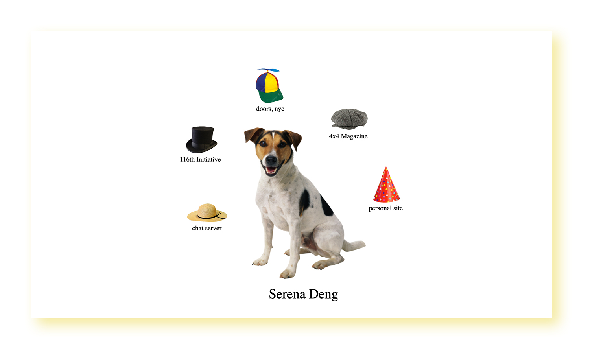
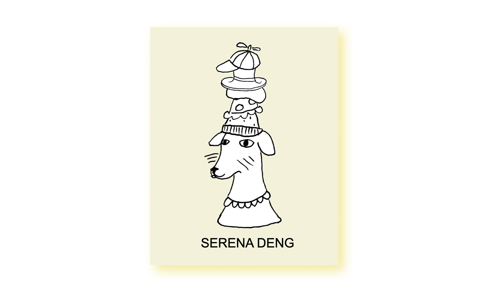

Where you are right now! Enjoy this exclusive peek into how it started. I was inspired by cutout dolls, label makers, and the materiality of paper. I hand-drew the home page elements and implemented a drag feature in Javascript. Sometimes I feel like a dog who wears many hats.
HTML, JAVASCRIPT, CSS, GITHUB PAGES
srenadeng.github.io / code